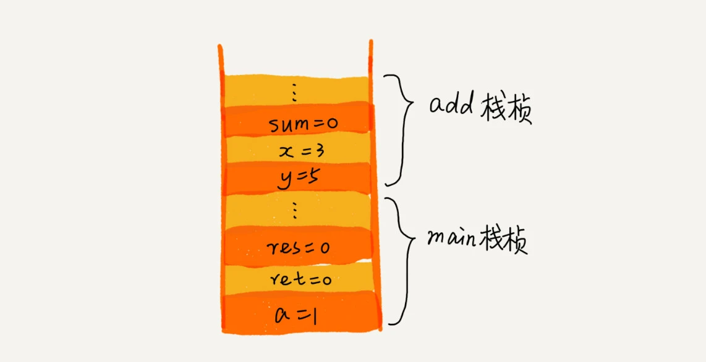

今天来学习栈。
如何理解“栈”
后进者先出，先进者后出，这就是典型的”栈“结构。
当某个数据集合只涉及在一端插入和删除数据，并且满足后进先出、先进后出的特性，这是就应该首选”栈“这种数据结构。
如何实现一个“栈”
栈既可以用数组来实现，也可以用链表来实现。用数组实现的栈，叫做顺序栈，用链表实现的栈，叫做链式栈。
基于数组实现
1 | class ArrayStack(object): |
基于链表实现
1 | class Node(object): |
时间复杂度O(1)，空间复杂度O(1)
支持动态扩容的顺序栈
当数组空间不够时，我们就重新申请一块更大的内存，将原来数组中数据统统拷贝过去。这样就实现了一个支持动态扩容的数组。
所以如果要实现一个支持动态扩容的栈，只需要底层依赖一个支持动态扩容的数组就可以了。当栈满了之后，我们就申请一个更大的数组，将原来的数组搬移到新数组中。

实际上，支持动态扩容的顺序栈，平时开发中并不常用到。这里还是重点练习一下复杂度分析。
复杂度分析
对于出栈操作来说，不会涉及内存的重新申请和数据的搬移，所以出栈的时间复杂度仍然是O(1)
对于入栈操作来说，当栈中有空闲空间时，最好情况时间复杂度是O(1)，当空间不够时，就需要重新申请内存和数据搬移，最坏情况时间复杂度是O(n)。
利用摊还分析法来分析平均时间复杂度。为了分析的方便，做一些假设和定义：
- 栈空间不够时，重新申请一个是原来大小两倍的数组；
- 为了简化分析，假设只有入栈操作没有出栈操作；
- 定义不涉及内存搬移的入栈操作为
simple-push操作，时间复杂度为O(1)
如果当前栈大小为K，并且已满，当再有新的数据要入栈时，就需要重新申请2倍大小的内存，并且做K个数据的搬移操作，然后再入栈。但是，接下来的K-1次入栈操作，都不需要再重新申请内存和搬移数据，所以这K-1次入栈操作都只需要一个simple-push操作就可以完成。

这里有一个疑惑点，为什么是K-1次入栈操作？分析，当前栈大小为K，并且已满。当K+1次入栈时，触发内存申请(申请空间为2K)和数据搬移(K个数据)操作，然后再将K+1个元素入栈，接下来的2K-K-1=K-1次入栈操作不需要触发内存申请和数据搬移。
结论：均摊时间复杂度一般都等于最好情况时间复杂度。因为在大部分情况下，入栈操作的时间复杂度O都是O(1)，只有在个别时刻才会退化为O(n)，所以把耗时多的入栈操作时间均摊到其他入栈操作上，平均情况下的耗时就接近O(1)
栈在函数调用中的应用
栈比较经典的一个应用场景就是函数调用栈。
操作系统给每个线程分配了一块独立的内存空间，这块内存被组织成“栈”这种结构，用来存储函数调用时的临时变量。每进入一个函数，就会将临时变量作为一个栈帧入栈，当被调用函数执行完成，返回之后，将这个函数对应的栈帧出栈。
1 | int main() { |
在执行到add()函数时，函数调用栈的情况

这里有一个疑惑点，为什么x=3、y=5比sum=0先入栈，翻了翻评论，应该是因为x和y是函数参数，所以先入栈。
栈在表达式求值中的应用
栈的另一个应用场景，表达式求值。
实际上，编译器就是通过两个栈来实现的。其中一个保存操作数的栈，另一个是保存运算符的栈。我们从左向右遍历表达式，当遇到数字，我们就直接压入操作数栈；当遇到运算符，就与运算符栈的栈顶元素进行比较。
如果比运算符栈顶元素的优先级高，就将当前运算符压入栈(为了拿到下一个操作数)；如果比运算符栈顶元素的优先级低或相同，从运算符栈中取栈顶运算符，从操作数栈的栈顶取2个操作数，然后进行运算，再把计算完的结果压入操作数栈，继续比较。
后缀(逆波兰)表达式定义
9+(3-1)*3+10/2用后缀表示法表示9 3 1 - 3 * 10 2 / +
叫后缀的原因在于所有的符号都是在要运算数字的后面出现
后缀表达式计算结果
后缀表达式：9 3 1 - 3 * 10 2 / +
规则：从左到右遍历表达式的每个数字和符号，遇到是数字就进栈，遇到是符号，就将处于栈顶两个数字出栈，进行运算，运算结果进栈，一直到最终获得结果。
代码
待补充...
中缀表达式转后缀表达式
平时所用的标准四则运算表达式，9+(3-1)*3+10/2叫做中缀表达式。
规则：从左到右遍历中缀表达式的每个数字和符号，若是数字就输出，即成为后缀表达式的一部分；若是符号，则判断其与栈顶符号的优先级，是右括号或优先级不高于栈顶符号，则栈顶元素依次出栈并输出，并将当前符号进栈，一直到最终输出后缀表达式为止。
代码
待补充...
栈在括号匹配中的应用
思路：用栈来保存未匹配的左括号，从左到右依次扫描字符串。当扫描到左括号时，则将其压入栈中；当扫描到右括号时，从栈顶取出一个左括号。如果能够匹配，比如(和)、[和]、{和}匹配，则继续扫描剩下的字符串。如果扫描的过程中，遇到不能配对的右括号，或者栈中没有数据，则说明为非法格式。
代码
待补充...
解答开篇
如何实现浏览器的前进、后退功能？
思路：使用两个栈，X和Y，我们把首次浏览的页面依次压入栈X，点击后退按钮时，再依次从栈X中出栈，并将出栈的数据依次放入栈Y。当我们点击前进按钮时，我们依次从栈Y中取出数据，放入栈X中。当栈X没有数据时，那就说明没有页面可以继续后退浏览了。当栈Y中没有数据，那就说明没有页面可以点击前进按钮浏览了。
代码
1 | import sys |
感受
- 写这些代码特别锻炼自己抽象能力。
课后思考
为什么函数调用要用栈来保存临时变量？用其他数据结构不行吗？
以下答案来自评论区置顶
其实，我们不一定非要用栈来保存临时变量，只不过如果这个函数调用符合后进先出的特性，用栈这种数据结构来实现，是最顺理成章的选择。
从调用函数进入被调用函数，对于数据来说，变化的是什么呢？是作用域。所以根本上，只要能保证每进入一个新的函数，都是一个新的作用域就可以。而要实现这个，用栈就非常方便。在进入被调用函数的时候，分配一段栈空间给这个函数的变量，在函数结束的时候，将栈顶复位，正好回到调用函数的作用域内。
JVM内存管理中有个“堆栈”的概念。栈内存用来存储局部变量和方法调用，堆内存用来存储Java中的对象。那么JVM里面的“栈”跟我们这里说的“栈”是不是一回事，如果不是，那它为什么又叫作“栈”呢？以下答案来自评论区置顶
内存中的堆栈和数据结构堆栈不是一个概念，可以说内存中的堆栈是真实存在的物理区，数据结构中的堆栈是抽象的数据存储结构。
内存空间在逻辑上分为三部分：代码区、静态数据区和动态数据区。动态数据区又分为栈区和堆区。
代码区：存储方法体的二进制代码。高级调度(作业调度)、中级调度(内存调度)、低级调度(进程调度)控制代码区执行代码的切换。
静态数据区：存储全局变量、静态变量、常量。常量包括
final修饰的常量和String常量。系统自动分配和回收。动态数据区：
- 栈区：存储运行方法的形参、局部变量、返回值。由系统自动分配和回收。
- 堆区：
new一个对象的引用或地址存储在栈区，指向该对象存储在堆区中的真实数据。
参考链接：